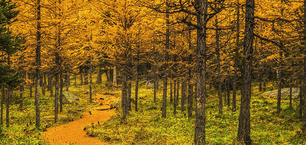
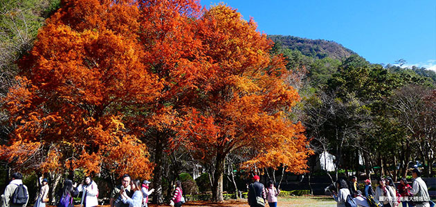
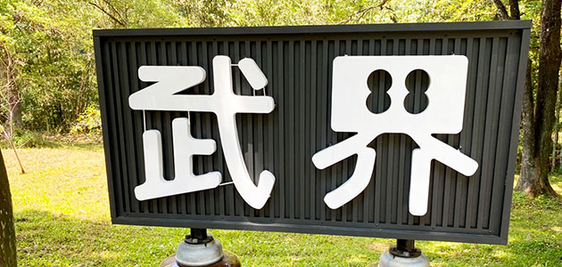
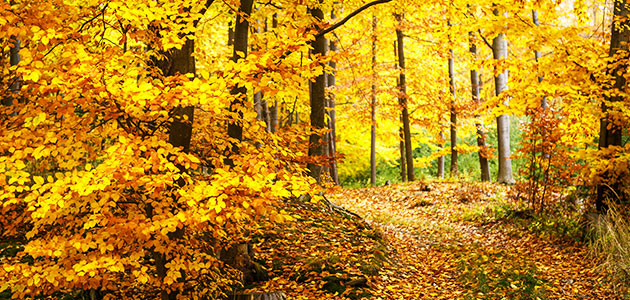
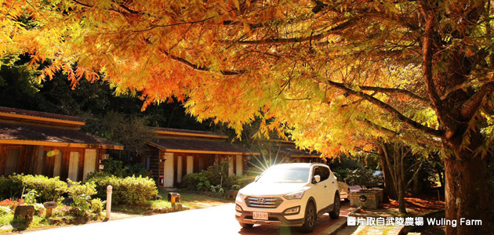

-
用明池的秋波代替春光吧
宜蘭明池 落羽松
宜蘭明池森林遊樂區是全台最大的檜木森林，擁有「北橫明珠」的美譽。沿途雲霧繚繞，山嵐掩映，紅橙黃綠的落羽松爭奇鬥艷，如夢似幻絕美秋畫，令人流連忘返。
上映期間：10月底- 11月初 -
踩著被紅楓鋪滿的地毯，就像回到了故鄉
奧萬大 楓葉
擁有「楓葉故鄉」之美稱的奧萬大國家森林遊樂區，擁有獨特的松楓吊橋，可以俯瞰楓葉森林，火紅的楓葉隨著秋風搖曳，鳥類穿梭紅楓枝葉間，秋天，是奧萬大最熱鬧的季節。
上映期間：11月到12月加入行程 -
那個滿江紅可代言著武界的美
武界滿江紅
前往台灣最後的祕境「武界」，以紅色與綠色顏料勾勒出水墨畫的深淺濃淡，涓流細水自蕨類縫隙中緩緩流過，與一旁武界山巒互相輝映，出自上帝之手的絕世名畫，便是傳說中的「武界滿江紅」。
上映期間：2月到3月 -
聽，擁有百萬年歲月的山林呢喃
太平山黃金山毛櫸
每年秋天到來，太平山的山稜線將會被遍地金黃渲染，那是台灣最大面積的山毛櫸原始林，由步道緩緩前行被金黃色的森林所環繞，映入眼簾的翠峰湖倒映著楓紅綠葉，彷彿一池明鏡鑲嵌於山林中。
上映期間：10月底- 11月初 -
紅楓．落羽松．銀杏三重奏
武陵農場 好楓光
武陵農場的四季風情各有不同，尤其是秋天的火紅楓葉十分引人入勝，彷彿點點火光的浪漫楓紅；金燦燦陽光點綴的黃金銀杏；還有近期最熱門的落羽松都是武陵農場的焦點。
上映期間：12月